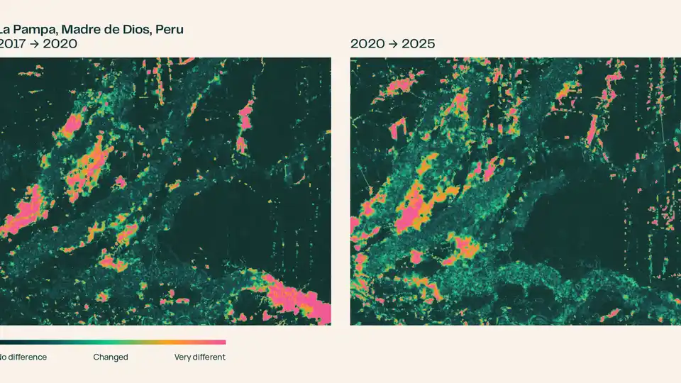
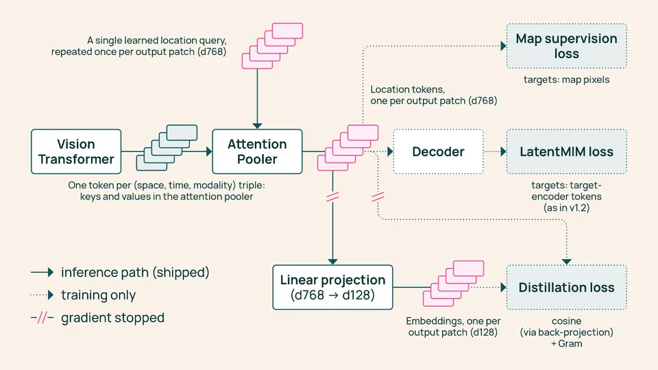

Ai2 precomputes the entire planet: OlmoEarth v1.3 turns a year of satellite data into ready-made embeddings
- Who: the Allen Institute for AI (Ai2), which released OlmoEarth v1.3 on October 22, 2026.
- What: a satellite embedding model — a vision transformer plus an Attention Pooler and a linear layer that turn a year of radar (Sentinel-1) and multispectral (Sentinel-2, Landsat) satellite time series into one 128-dimensional vector for every 10-meter pixel on Earth; the first 64 dimensions also work on their own.
- Precomputed for the planet: annual embeddings at 10-meter resolution in 128- and 64-dimensional versions — roughly 150 TB per year — shared on Source Cooperative; 2023, 2024 and 2025 are global, 2017–2022 cover select countries with more backfilling on the way.
- Benchmarks: 27 evaluations across six continents against Google's AlphaEarth Foundations and Tessera v2 — OlmoEarth's 128-dimensional embeddings score highest on 20 of 27, the 64-dimensional version on 18 of 27; the release also introduces PLANTEUR, a new tropical crop-type benchmark, where coverage of the launch reports roughly 30% above Tessera v2 and nearly 60% above AlphaEarth.
- Training cost: the cheapest OlmoEarth yet — 53% of v1.2's computing time and 18% of v1's, with 50% and 22% of the carbon emissions; Ai2 says reproducing the final pretraining run would cost about $2,720 of rented H100 time.
- Open: model weights, pretraining data and code are published under the OlmoEarth Artifact License, and the OlmoEarth Embeddings Explorer runs in the browser with no account — pan the planet, flip years, find similar places, train a small classifier from a few labels, export GeoTIFFs.
The Allen Institute for AI released OlmoEarth v1.3 on Thursday, a satellite embedding model that compresses a full year of satellite observations into a numerical fingerprint for every 10-by-10-meter patch of ground on Earth — and, in a move that reframes what an open model release can look like, Ai2 precomputed those embeddings for the entire planet and gave them away. The release also includes a browser-based explorer that lets anyone turn the embeddings into maps and change analyses in seconds, with no sign-in, no GPU, and no advanced technical knowledge required.
Compute once, reuse everywhere
Until now, the primary way to use OlmoEarth was fine-tuning in OlmoEarth Studio: training a model for each task and running it over satellite imagery to make a map — a workflow that demands GPU access and the ability to download and store the imagery. Embedding models change the economics: a vision transformer reads the year of radar (Sentinel-1) and multispectral (Sentinel-2 and Landsat) satellite time series, an Attention Pooler compresses it into one vector per patch of land, and a linear layer reduces it to 128 numbers. Ai2 computed those vectors for the whole planet and shared them on Source Cooperative. From there, a crop map, a land-cover map, or a change analysis becomes a lightweight modeling problem: train a small classifier on top and run it locally. The archive runs to roughly 150 TB per year at 10-meter resolution, and every embedding ships with provenance tables recording the exact satellite scenes behind each 20-kilometer tile, so any pixel can be traced back to the imagery that produced it.

Beats AlphaEarth on 20 of 27 evaluations
Ai2 evaluated OlmoEarth v1.3’s embeddings against Google’s AlphaEarth Foundations and Tessera v2 across 27 evaluations spanning six continents and many different tasks. The 128-dimensional embeddings score highest on 20 of 27 evaluations and rank highest overall; the lighter 64-dimensional version, at half the size, still leads on 18 of 27. As part of the evaluation, Ai2 introduced PLANTEUR, a new crop-type benchmark for tropical farming — train a classifier on some islands and test it on one it has never seen, mirroring the real-world problem of mapping regions with little labeled data. Coverage of the launch reports OlmoEarth scoring roughly 30 percent higher than Tessera v2 on PLANTEUR and nearly 60 percent higher than AlphaEarth. In practice, Ai2 says a small classifier on these embeddings is enough to map smallholder crops in Kenya, detect brick kilns west of Dhaka, assess fire damage in Indonesia, and track gold mining in the Peruvian Amazon.

The La Pampa proof
The flagship demo is Madre de Dios, Peru, where illegal gold mining around La Pampa peaked in 2017 and 2018, clearing more than 1,200 hectares of forest in the buffer zone of the Tambopata National Reserve, according to Amazon Conservation’s MAAP monitoring program. Peru’s Operation Mercurio shut most of it down in February 2019. Ai2 shows the crackdown is visible directly in the embeddings: compare each pixel’s vector across years — no model training required — and the 2017-to-2020 pair lights up where mining was spreading southeast; run 2020 to 2025 and the signal shifts. The reprieve, though, was brief: pockets in the northwest kept operating, and in August 2026 the Associated Press reported that Peru sent navy patrols back into the reserve after prosecutors found mining had crossed into Tambopata itself.
Cheapest to train, still fully open
OlmoEarth v1.3 is also Ai2’s cheapest OlmoEarth to train: 53% of v1.2’s computing time and 18% of v1’s, with 50% and 22% of the carbon emissions — while matching v1.2’s performance as a fine-tuning model across research and partner labels. If you wanted to reproduce the final pretraining run yourself, Ai2 puts the cost at roughly $2,720 of rented H100 time. Everything behind the model is fully open: the weights, the pretraining data, and the pretraining code, all published under the OlmoEarth Artifact License used for v1 and v1.2. That makes today’s release less a model drop and more a public utility: the most expensive part of planetary-scale AI — the compute — has been done once, by Ai2, and the fingerprints of the whole planet are now free to query.
Frequently asked questions
What does OlmoEarth v1.3 actually produce?
One 128-dimensional embedding vector for every 10-meter pixel of Earth's land surface per calendar year — a numerical fingerprint of what the model learned from a year of Sentinel-1 radar and Sentinel-2 and Landsat multispectral satellite time series. The first 64 dimensions also work on their own as a smaller embedding.
What can you do with it without a GPU or any sign-in?
Use the OlmoEarth Embeddings Explorer in a browser: pan the planet, flip between years to see how landscapes changed, pull up the underlying Sentinel-2 imagery to check the map, click a place to find others that look similar, drop a few labeled points to train a small classifier on the spot, and export the result as a GeoTIFF. Ai2 says a first pass that used to take a fine-tuning run of hours now takes seconds.
How did it perform against rival models?
Across 27 evaluations on six continents, OlmoEarth v1.3's 128-dimensional embeddings scored highest on 20, ahead of Google's AlphaEarth Foundations and Tessera v2; the 64-dimensional version still led on 18. The release also introduced PLANTEUR, a new tropical crop-type benchmark for places a classifier has never seen, where launch coverage reports roughly 30% above Tessera v2 and nearly 60% above AlphaEarth.